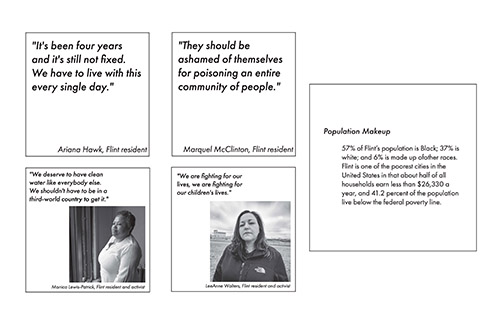
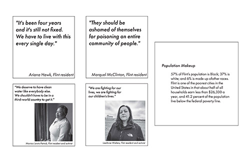

Over the course of four weeks I worked to create an exhibition design that reported on the issue of environmental racism throughout the United States. I began by researching and creating text that would be displayed and created a visual language to highlight this problem and possible solutions. I worked to adhere to EGD standards for accessibility and used language to try to cater to different audiences.


 



While focusing on standards of Environmental Graphic Design and way-finding I as challenged to create a map that could lead the viewer from point a to point b. I tried to capture the energy of Anthony Bourdain and his love and passion for food and culture in this piece.